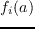
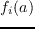
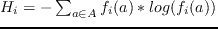

Next: Trajectoire et pourcentage d' Up: Optimisation du protocole Monte-Carlo Previous: Température et résultats Superfamily
Il apparaît assez clair, de part le principe du test de metropolis-Hasting, que le Monte-Carlo à basse température explore une partie de l'espace plus petite qu'au haute température. Il est alors légitime de mesurer cet effet sur les ensembles de dix milles séquences obtenues. Nous utilisons l'entropie pour un alphabet A (voir table  ) réduit par position de séquences , c'est-à-dire:
Pour i une position dans la séquence, notons la fréquence en i, de la lettre a de notre alphabet A . Alors l'entropie en i vaut:

) réduit par position de séquences , c'est-à-dire:
Pour i une position dans la séquence, notons la fréquence en i, de la lettre a de notre alphabet A . Alors l'entropie en i vaut:

Puis, nous calculons la moyenne sur les postions des  pour nos tests. Les résultats sont sur le tableau  .
.
|
|
Nous observons la diminution systématique de l'entropie avec cette de la température. Cela représente une moindre diversité dans les séquences obtenues pour les températures des plus froides.
mignon 2015-06-29